소형 프롭
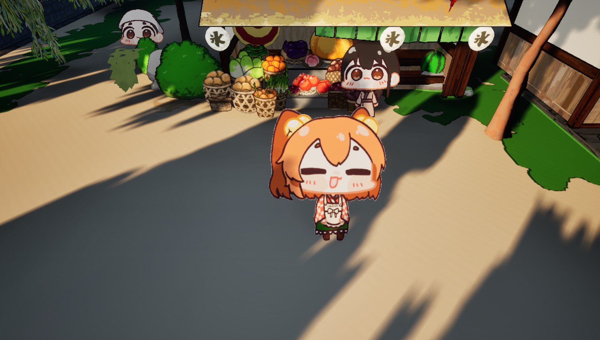
프롭 제작 과정중 2D를 3D형태로 보이고 자연스러운 그림자, 쉐이더를 위해 구체의 x값을 축소후 뒷부분 절반을 날려
) 형태의 프롭을 만들었습니다.
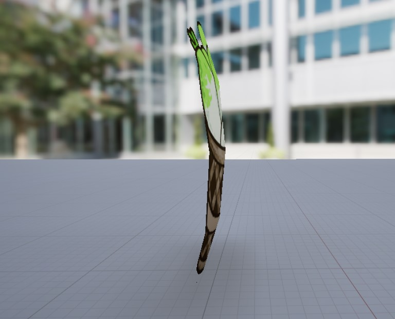
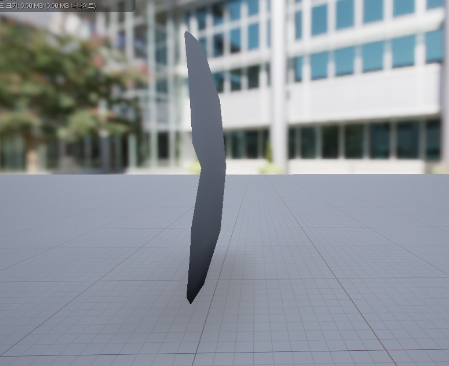
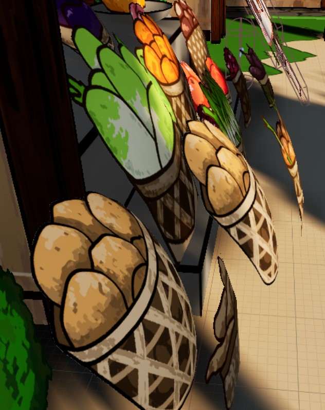
이후 프롭의 머티리얼을 블루프린트로 간결하게 사용했습니다.
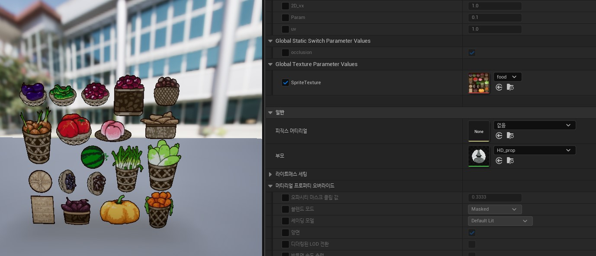
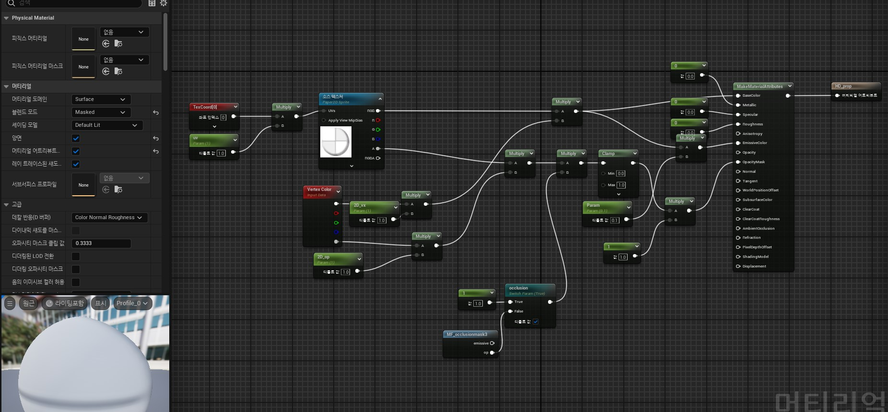
소형 프롭

프롭 제작 과정중 2D를 3D형태로 보이고 자연스러운 그림자, 쉐이더를 위해 구체의 x값을 축소후 뒷부분 절반을 날려
) 형태의 프롭을 만들었습니다.



이후 프롭의 머티리얼을 블루프린트로 간결하게 사용했습니다.


중형 프롭
직선적인 물체들은 BP를 사용해 조합하거나, blander를 사용해 만들었으며,
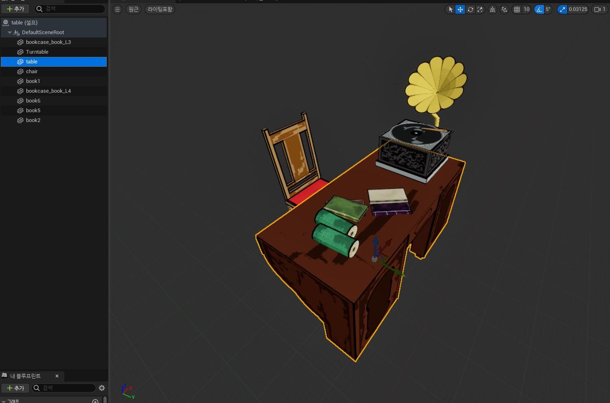
중요한 포인트는 해당 프로젝트는 2D 감성과 외각선이 매끈하지 않고
시각적 안정감을 위해 평면 메쉬를 메인으로 사용했습니다.
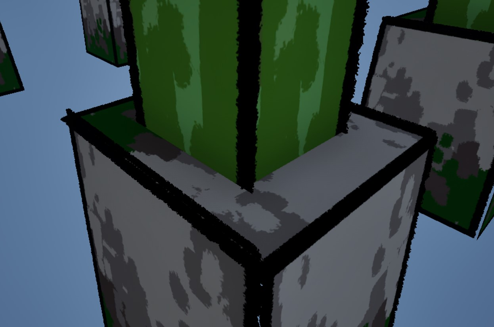
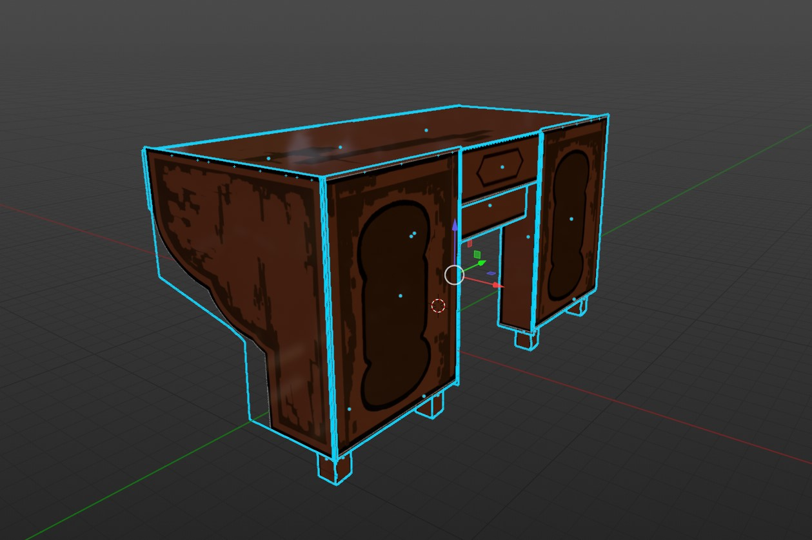
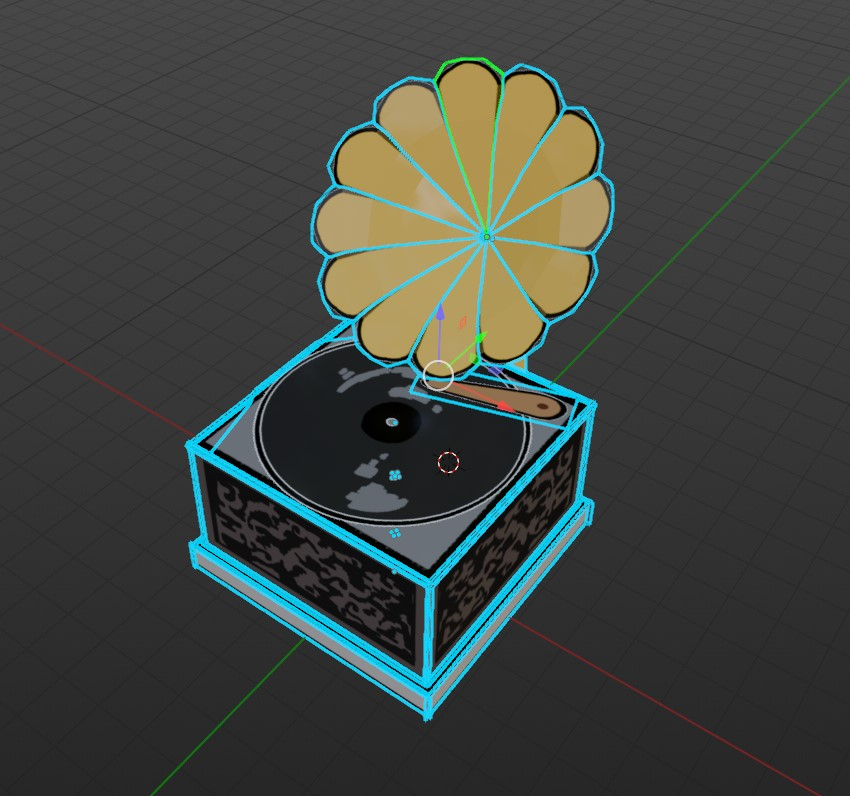
대형 프롭
대형 프롭은 이미 만들어진 소형 프롭 단계에서 추출하여 제작을 했으나
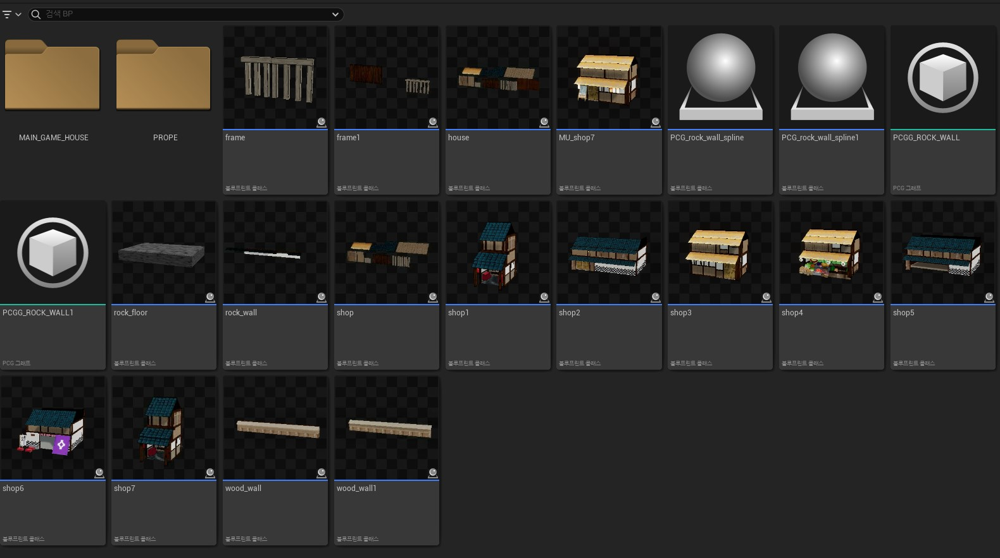
초기 단계에서 소형 텍스쳐를 개별 텍스쳐로 만들었기에 아쉬운 부분이 있으나 이후 텍스쳐를 절약하기 위해
재활용 하는 방향으로 사용했습니다. 그렇기에 언리얼 내부 BP를 사용하여 BP내부에서 조정했습니다.
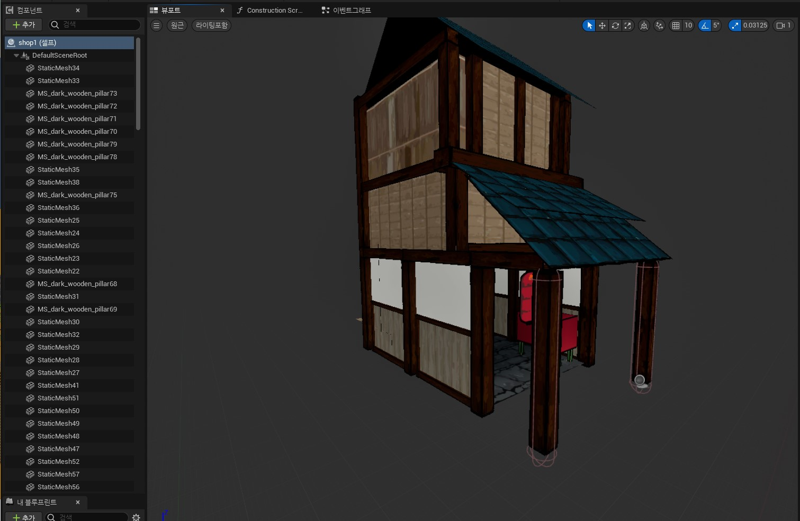
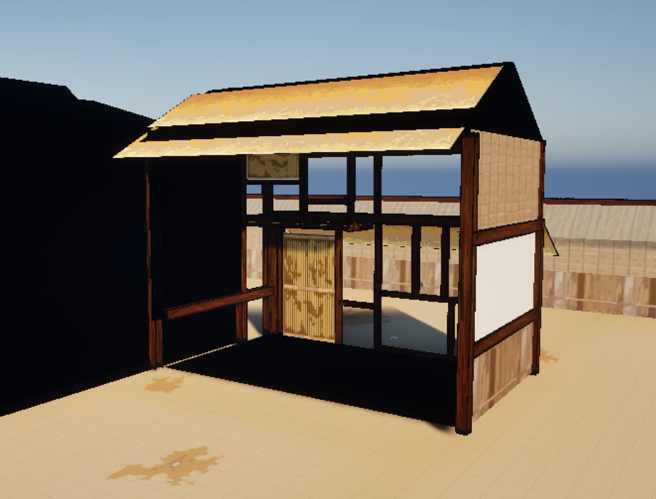
wall과 PCG 활용
기본적인 담장 wall은 BP에서 소형 프랍의 조합을 통해 만들었지만
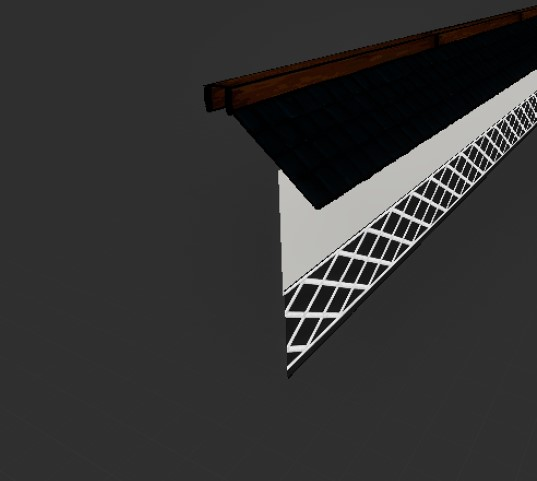
pcg를 활용해 기존 블록형 머티리얼을 여러층으로 만들어 재활용 하여 수로 벽면을 만드는 방식으로 사용되었습니다.
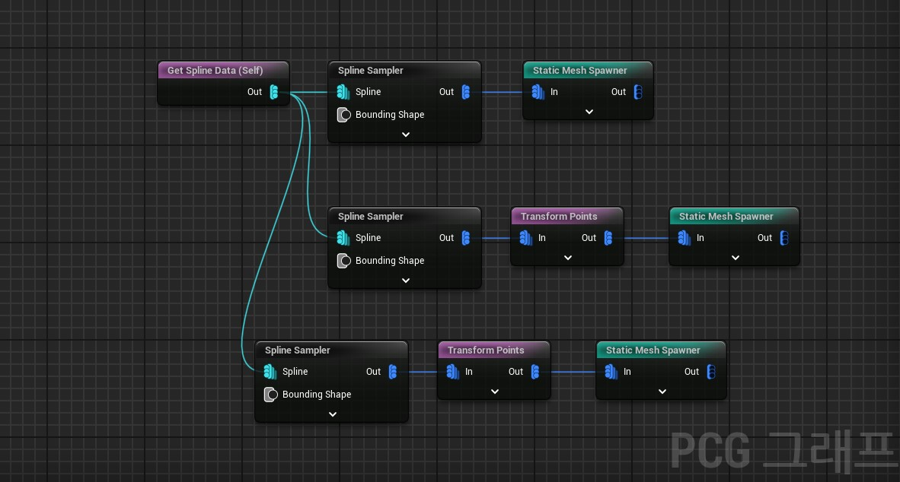
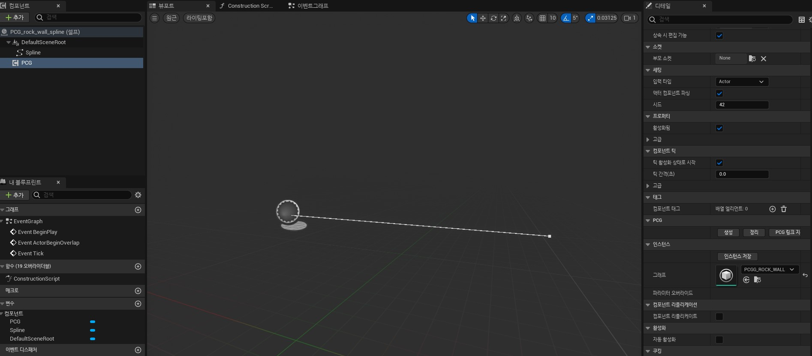
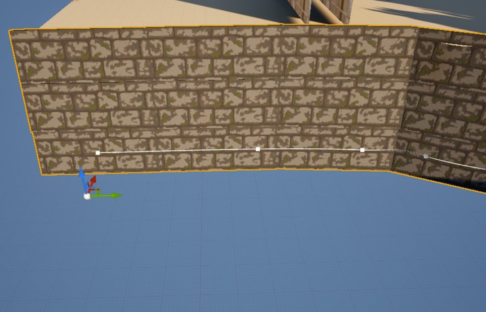